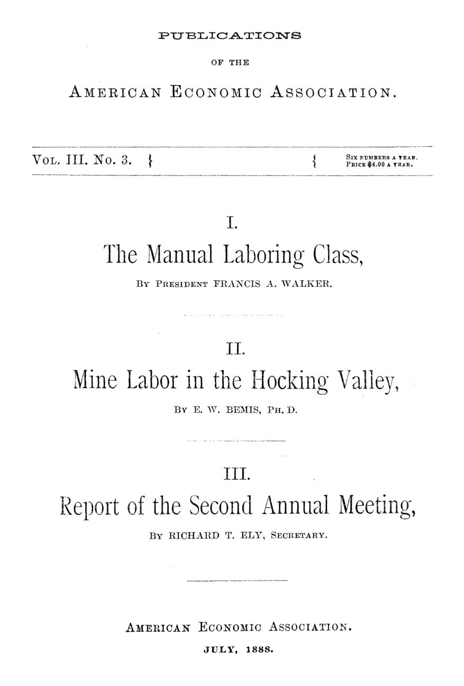

Salário, greve e armazém da mina: o trabalho visto em 1888
Leitura: 8 min
Um presidente que aceita o sindicato mas culpa o imigrante, um pesquisador que encontra paz e miséria nas minas de Ohio e a ata de uma profissão em formação.


Sábado, 21 de maio, oito da noite, no Huntington Hall do Massachusetts Institute of Technology. Francis A. Walker, presidente da American Economic Association, abre a segunda reunião anual da entidade numa sessão conjunta com a American Historical Association. Escolhe um tema que o programa quase deixara de lado: os esforços dos trabalhadores manuais para melhorar a própria condição. A justificativa é a intensidade que o debate sobre as relações entre capital e trabalho ganhara no ano anterior.
O número 3 do volume 3 das Publications, datado de julho de 1888, reúne esse discurso, um estudo de Edward W. Bemis sobre as minas de carvão do vale do rio Hocking, no sudeste de Ohio, e a ata da reunião, redigida pelo secretário Richard T. Ely. No prefácio, Ely registra que a associação já tinha quatro filiais locais: Buffalo, Galesburg, Orange e Springfield.
Os três textos giram em torno de uma pergunta: o trabalhador organizado melhora a distribuição da renda ou a perturba? Walker responde com uma concessão teórica e uma suspeita política. Bemis responde com dados de campo, que mostram ao mesmo tempo o êxito da arbitragem e a miséria do subemprego. A ata, por sua vez, mostra uma profissão jovem discutindo ferrovias, varejo e serviços municipais com a mesma desconfiança da concorrência sem regras.
Por que Walker achava que o operário devia defender o próprio salário?
Vinte e cinco anos antes, lembra Walker, a doutrina aceita na Inglaterra e nos Estados Unidos dizia que o trabalhador não precisava fazer nada. A concorrência entre patrões fixaria o salário no nível mais alto sustentável. Se o lucro levasse fatia excessiva, viraria capital, demanda por trabalho e salário maior no ciclo seguinte. Ele cita John E. Cairnes e o professor Perry como porta-vozes dessa ideia.
“O trabalhador não era chamado a buscar seu interesse; seu interesse o buscaria e o encontraria.” (“his interest would seek him and would find him”)
Walker considera essa visão superada. A concorrência é imperfeita se os trabalhadores não defenderem seus interesses com a mesma energia dos patrões, e o próprio empregador ganha ao lidar com homens que conhecem seus direitos. O primeiro sinal da mudança, diz, veio em 1864, quando o professor Fawcett admitiu em Cambridge que coalizões operárias podiam capturar parte de lucros excessivos em períodos de transição.
A concessão tem limites estreitos. Nenhum aumento salarial, afirma, se sustentou sem uma razão econômica que o permitisse; o que passa disso recai sobre a comunidade e, primeiro, sobre os próprios trabalhadores. Ele vê no boicote e na confederação dos Knights of Labor duas armas novas e perigosas, prevê o desaparecimento do boicote e observa que as greves recentes vinham do trabalho qualificado, já bem pago, e não dos mais pobres.
O trecho mais duro é outro. Walker atribui a “elementos estrangeiros” (foreign elements) da população a quase totalidade dos ataques violentos à produção e ao transporte. Cita Chicago, St. Louis e Rock Springs, onde, em 1885, um ataque a chineses deixou quase cinquenta mortos, e afirma que nenhum nascido no país participou. Diz rejeitar o nativismo do velho Know-Nothing, mas pede que os americanos se imponham contra quem chega para perturbar o país. É uma tese sobre origem, não uma demonstração: o discurso não traz dados que a sustentem, e em Rock Springs as vítimas eram justamente estrangeiras.
A arbitragem trouxe paz às minas de Ohio?
Bemis visitou o vale do Hocking em abril e encontrou harmonia entre operadores e mineiros. A região ficara famosa pela greve de 1884, a mais amarga da mineração americana, encerrada com a rendição dos mineiros a 40–50 centavos de dólar por tonelada.
A paz veio por etapas. Após uma convenção sindical em Indianápolis, em setembro de 1885, vieram conferências com patrões. Em Columbus, por 39 votos a 1, aprovou-se uma tabela de preço por tonelada para cada distrito, e elegeu-se uma junta paritária de conciliação e arbitragem.
Antes disso, uma decisão arbitral de A. G. Thurman, aceita pelas duas partes, elevara a tarifa do Hocking de 50 para 60 centavos por tonelada. Os operadores temeram a ruína; deu-se o contrário: sem medo de greve, podiam aceitar contratos grandes. Um deles disse a Bemis que passara a ganhar mais pagando salários mais altos.
A lógica foi resumida por um operador de Indiana, o coronel Yeoman: pouco importava quanto se pagava pela tonelada, “desde que obrigássemos nossos concorrentes a pagar preços igualmente altos” (provided we compelled our competitors to pay equally as high prices). O ponto fraco: os operadores de Illinois recusaram o reajuste enquanto rivais do próprio estado descumprissem a tabela.
O lado escuro é o subemprego, e Bemis aponta uma causa institucional: o armazém da companhia. Nas minas, comprar ali era condição tácita para manter o posto. Convinha reter mais homens que o necessário: trabalhavam pouco, mas todos consumiam. Um operador confessou a Bemis que resgatava com deságio os vales que emitira pelo valor cheio.
As crianças pagavam a conta. Numa sala de alunos de cerca de 13 anos, Bemis contou 30 meninas e 7 meninos; os outros estavam na rua ou na mina. As leis de ensino obrigatório, escreve, eram letra morta. Em junho de 1888, o líder mineiro Chris Evans relatava uma vitória: lei de Ohio impondo pagamento quinzenal.
O que a ata revela sobre a profissão em formação?
A reunião durou cinco dias, entre Boston e Cambridge, e começou pelas ferrovias. Edmund J. James tratou da regulação federal; Edwin R. A. Seligman, das cláusulas de trajeto curto e longo da nova lei de comércio interestadual. No debate, Arthur T. Hadley, de Yale, argumentou contra a estatização. Ely respondeu que a ferrovia privada também corrompia a política e que entre Pittsburgh e Buffalo não havia trem que fizesse 25 milhas por hora.
A comissão de comércio trouxe um levantamento com 1.185 varejistas, sobretudo do Kansas, de Iowa e de Minnesota. Concluiu que o número de lojistas crescia, em proporção, quatro vezes mais rápido que a população, e que só cerca de 56% eram estáveis num período de cinco anos. Walker advertiu que dados tão limitados não sustentavam generalizações.
Nos serviços municipais, Davis R. Dewey mostrou como cidades extraíam receita das companhias de bonde: Baltimore obtinha mais de US$ 100 mil por ano para seus parques cobrando um percentual da receita bruta. Ely foi além: se a concessão vinha do público, numa eventual compra pela cidade nada deveria ser pago por ela, apenas pelo valor da instalação.
Ely, como secretário, relatou cerca de trezentos sócios e disse esperar um dia três mil. A filial de Springfield, a primeira, tinha 62 membros, onze deles mulheres, e repassava à entidade nacional metade da anuidade de três dólares. A assembleia aprovou ainda a eleição de até 25 economistas estrangeiros como membros honorários. O encontro terminou com um jantar em Plymouth.
Na minha leitura
Na minha leitura, o contraste entre os dois primeiros textos é a lição mais útil do volume. Walker fez uma concessão teórica importante, a de que o salário também depende do poder de barganha, e em seguida explicou a violência pela origem dos trabalhadores, sem apresentar prova. Bemis, com caderno de campo, encontrou causas que se podiam medir e corrigir: o armazém cativo, o pagamento mensal, a escola vazia.
O coronel Yeoman, por sua vez, formulou sem saber um dilema permanente: um piso comum tira o salário da disputa entre concorrentes e pode estabilizar um setor inteiro, mas só funciona se todos o cumprirem. Quando um estado ou distrito fica de fora, como Illinois, o acordo passa a premiar quem não paga.
Glossário
- arbitragem
- solução de um conflito por um terceiro escolhido pelas partes, que se comprometem a acatar a decisão
- junta de conciliação e arbitragem
- órgão com representantes de patrões e empregados, em número igual, para negociar tabelas e resolver disputas sem greve
- pluck-me store
- apelido do armazém da companhia mineira, onde o trabalhador era pressionado a comprar; o “truck system” de pagamento em vales e mercadorias
- check-weighman
- pesador escolhido pelos próprios mineiros para conferir na balança o carvão sobre o qual cada um era pago
- Knights of Labor
- confederação nacional de trabalhadores de todos os ofícios, em ascensão nos anos 1880
Artigos desta edição
- Efforts of the Manual Laboring Class to Better Their Condition — Francis A. Walker, presidente da American Economic Association (pp. 7–26). Discurso de abertura da segunda reunião anual. Walker registra a virada da economia: a velha tese de que a concorrência entre patrões bastava para fixar o salário dera lugar à ideia de que o trabalhador precisa defender ativamente seu interesse. A concessão vem com limites: nenhum aumento se sustenta sem base econômica, o boicote deve desaparecer e os Knights of Labor tendem ao fracasso. Walker atribui a violência trabalhista a “elementos estrangeiros” e cita o massacre de chineses em Rock Springs, tese que o texto afirma sem demonstrar. JSTOR
- Mine Labor in the Hocking Valley — Edward W. Bemis (pp. 27–42). Relato de visita às minas de carvão betuminoso do sudeste de Ohio, palco da grande greve de 1884. Bemis descreve a construção de um sistema de conferências e arbitragem entre mineiros e operadores, com tabelas de preço por tonelada e uma junta paritária, e o testemunho de patrões que passaram a lucrar mais pagando mais. Mostra também o lado escuro: subemprego crônico, renda anual baixa, armazéns da companhia que lucravam mais que as minas, vales resgatados com deságio e meninos fora da escola. JSTOR
- Proceedings of the Second Annual Meeting of the American Economic Association — Richard T. Ely, secretário (pp. 43–86). Ata da reunião em Boston e Cambridge, de 21 a 25 de maio. Resume trabalhos sobre regulação federal das ferrovias, tarifas de trajeto curto e longo, varejo e serviços públicos municipais, além dos debates entre Hadley, Ely, Atkinson e Sterne sobre ferrovias estatais e privadas. Inclui o relatório da filial de Springfield, primeira da associação, com sua constituição, a emenda que cria até 25 membros honorários estrangeiros, a relação de dirigentes e conselheiros e a lista de sócios. JSTOR
Fontes
- Efforts of the Manual Laboring Class to Better Their Condition (pp. 7–26). JSTOR · Internet Archive (PDF)
- Mine Labor in the Hocking Valley (pp. 27–42). JSTOR · Internet Archive (PDF)
- Proceedings of the Second Annual Meeting of the American Economic Association (pp. 43–86). JSTOR · Internet Archive (PDF)
- Sumário da edição no JSTOR: Publications of the American Economic Association, vol. 3, nº 3.
Documento em domínio público (EUA, publicado antes de 1931), via JSTOR Early Journal Content e Internet Archive. Resumo e comentário do autor deste site, sem afiliação com a American Economic Association. Encontrou um erro? Escreva: a correção é publicada no próprio texto, com data.
← Nº 13 · O capital muda de corpo, não de dono: Clark e a natureza do capital Nº 15 · Medir em vez de descrever: Mayo Smith e a estatística como ciência →